This Issue
August 2026 edition
33 vs 81
Flips resold this edition versus the same two months a year ago; the operators behind them fell to 29 from 68
Flip exits fell to 33 from 81 a year ago, and the operator bench thinned faster than the deal count
Flip exits fell to 33 this edition from 81 a year ago, and the operator count behind them fell further: 29 distinct sellers versus 68. What remains is concentrated, with the top ten operators accounting for 59% of flip resale revenue against 31% a year ago. The surviving crews have also moved outward — Tooele County took 27% of flip exits versus 15%, zip 84074 alone 24% versus 7%, and the median flip sat about 20.4 km from downtown against 17.0 km. Median dollar figures barely moved and are estimates, so read the counts and the geography.
Investor Playbook
What this issue's numbers suggest checking, by investor type. Observations from recorded data — not investment, legal, or tax advice.
Fewer buyers on the list, and they sit west of the valley
Wholesalers
Flipper acquisitions ran 35 this edition against 74 a year ago, so the disposition list is materially shorter. The data suggests concentrating on 84074 Tooele, which recorded 27 investor buys and 8 flip exits, plus 84120 West Valley West and 84104 Poplar Grove at 17 and 13 buys. Only one assignment surfaced on a recorded deed against 15 a year ago; treat that as a floor, not a market reading.
Underwrite the hold, not the headline margin
Flippers
Median hold on this edition's 33 exits was 204 days against 196 a year ago, with 27% of sales taking over a year, and gross margin estimated near 29% before rehab and carry, which are not public record. With pre-1950 stock at 27% of exits versus 9%, scope risk is higher on the same nominal budget. Worth checking whether your 84074 and 84065 comps come from the same operators now supplying 59% of resale revenue.
Condo basis is the cheapest recorded entry this edition
Landlords
Condos accounted for 45 of the 350 investor purchases at an estimated median around $346,100, against roughly $529,100 for the 260 single-family buys. Small multi is thinner at 11 two-to-four unit deals, estimated median about $618,450. With flip acquisitions down to 35 from 74, competition for 1970s-era stock — the largest purchase decade at 57 deals — is lighter than last year.
Fill the rehab gap the recorded market vacated
Private lenders
Recorded private originations fell to 18 from 69 a year ago, and rehab-funded loans totalled 18 across the entire trailing twelve months. Median trailing-twelve-month loan is estimated near $374,800 on an estimated loan-to-price median close to 0.99, so leverage against price is not modest where it exists. The 79 seller-held notes recorded this edition mark where borrowers are going instead; note terms and rates are not recorded and are not published here.
No flip competition on small multi, either period
Multifamily investors
Small multifamily made up 0% of flip exits both this edition and a year ago, so the 11 two-to-four unit and 7 apartment 5+ purchases faced no resale-driven bidding. Apartment 5+ carried the lowest estimated per-foot basis of any residential product type at roughly $236, against about $295 for single family. Volumes at these counts are small; verify each parcel individually rather than reading the medians as a market rate.
Factoids
Numbers from this period a practitioner would repeat to a colleague. Each computed directly from recorded instruments.
350 investor purchases — Recorded investor buys this edition
trending up · vs 313 a year ago, and 441 in the prior period
Acquisition volume is still above last year even as resales shrink. The sequential drop from 441 is the sharper signal for anyone competing for contracts right now.
35 flipper acquisitions — Homes bought by flip operators this edition
trending down · vs 74 a year ago
Buying by the flip cohort is running at less than half of last year's pace. Fewer cash-style competitors on distressed product, but also fewer end buyers for wholesalers.
604 homes in flipper hands — Estimated flip pipeline inventory, latest month
trending down · vs 825 in the same month a year ago
The held pipeline has drained for twelve straight months. Nine positions aged out of the pipeline in the latest month, which is where discounted resale supply tends to appear.
18 private loans recorded — Recorded private-lender originations this edition
trending down · vs 69 a year ago and 24 in the prior period
Only 22% of the 217 observed investor purchases over the trailing twelve months carry a recorded loan, and 37.5% of those funded rehab. Deal capital is largely arriving unrecorded or unleveraged.
79 seller-financed notes — New notes held this edition
trending up · vs 60 in the prior period; 80 a year ago
Seller paper is the one financing channel holding its level. It is the practical fallback while recorded third-party private lending stays scarce.
27% of flips built pre-1950 — Share of this edition's flip exits on pre-1950 stock
trending up · vs 9% a year ago
Median flip square footage fell to 1,638 from 1,885 and median bedrooms rose to 4 from 3, so the product mix has shifted materially. Comparisons of per-foot figures across the two periods are mix-driven and estimated.
59% of flip revenue from the top ten — Top-ten operator share of estimated flip resale revenue
trending up · vs 31% a year ago
A handful of crews now carry most of the exit volume, with 29 operators total. Repeat counterparties are easier to identify and to underwrite than they were a year ago.
Market Activity — Investor Purchases
Monthly count of investor purchases of MSA properties (left axis) and the median purchase price (right axis), trailing 13 months. The most recent month can grow up to ~15% as late recordings arrive.
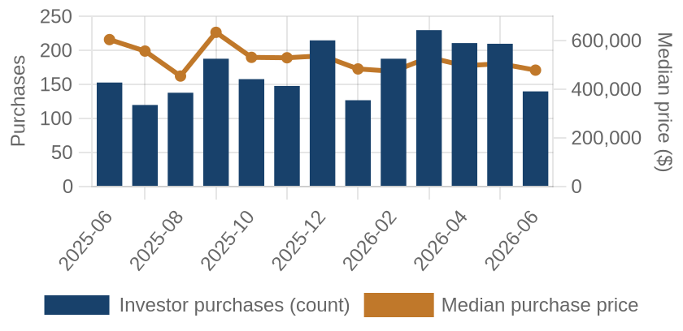
Investor purchases per month (bars) and median purchase price (line), trailing 13 months.
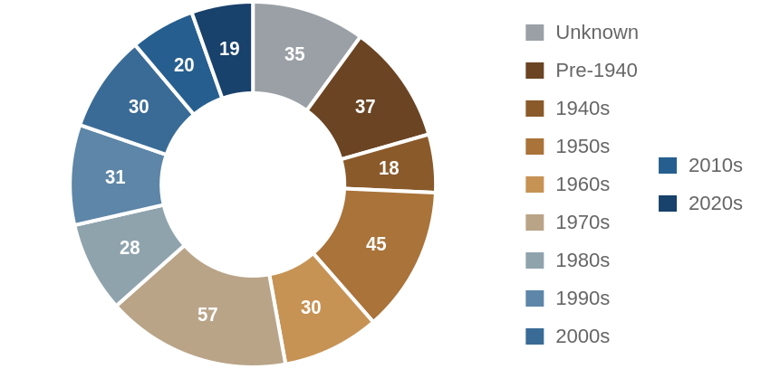
Which vintage of housing investors bought this edition, by decade built.
Where the Money Went
The geography of the period's investor activity: which zip codes saw the most recorded deals, and the largest individual transactions at street level.
The 8 busiest zip codes for investor deals
Pins rank the busiest zips by recorded investor deals (purchases + flips of existing homes) this period — #1 busiest; orange = top 3; pin size scales with deal volume. Median buy is the typical investor purchase; median sale the typical flip resale. Click a pin for details; full table below.
| # | Zip | Area | Purchases | Flips | Median buy | Median sale |
|---|
| #1 | 84074 | Tooele | 27 | 8 | $370,294 | $429,550 |
| #2 | 84047 | Midvale | 17 | 1 | $468,560 | n/a |
| #3 | 84120 | West Valley West | 17 | 1 | $448,321 | n/a |
| #4 | 84121 | Cottonwood Heights | 17 | 1 | $738,150 | n/a |
| #5 | 84020 | Draper | 17 | 0 | $718,200 | n/a |
| #6 | 84096 | Herriman | 14 | 1 | $631,312 | n/a |
| #7 | 84104 | Poplar Grove | 13 | 2 | $357,105 | n/a |
| #8 | 84106 | Sugar House | 13 | 0 | $399,000 | n/a |
Dollar figures on this page are estimates. This county does not disclose sale prices, so 58% of them are back-computed from the recorded mortgage at an assumed loan-to-value. Treat every price, margin and per-foot figure as indicative. Counts, dates, hold times, parties and geography come from the deed record itself and are unaffected.
A representative deal in each of the busiest zips
One deal per zip: the largest matching this market's typical house (typical for this market: 1714 sqft, 4 bed, built around 1971; priced within 4x the county assessment and under 5x its own zip's median).
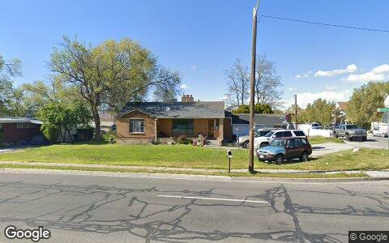
$1.2M · Purchase
1624 W CALIFORNIA AVE, Salt Lake City UT 84104
Single family · 2,200 sqft · May 6
Street View May 2019 — before the purchase
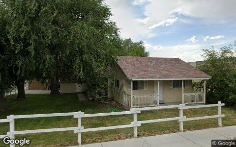
$1.1M · Purchase
12388 S 700 E, Draper UT 84020
Single family · 1,695 sqft · Jun 3
Street View Aug 2025 — before the purchase
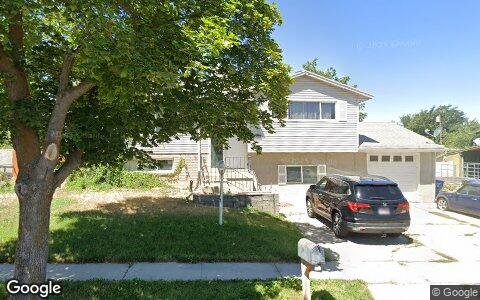
$902,139 · Purchase
4164 S 4205 W, West Valley City UT 84120
Single family · 2,308 sqft · May 28
Street View Jul 2025 — before the purchase
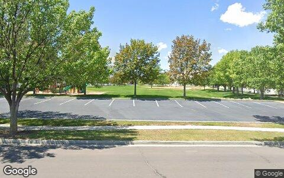
$735,357 · Purchase
13141 S WOODS DR PARK, Herriman UT 84096
Single family · 2,360 sqft · May 19
Street View Jul 2025 — before the purchase
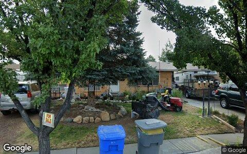
$609,898 · Purchase
8343 S MONROE ST, Midvale UT 84047
Single family · 1,232 sqft · Jun 9
Street View Jul 2025 — before the purchase
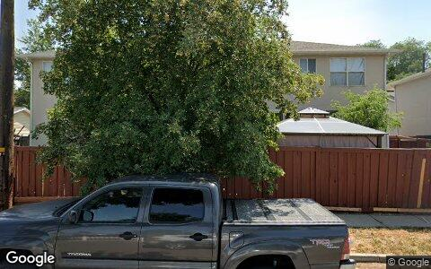
$505,400 · Purchase
3199 S 945 E # 3, Salt Lake City UT 84106
Condo · 1,764 sqft · May 22
Street View Jun 2025 — before the purchase
Deal sheet — private lending, in date order
Private loans recorded against residential property this period, oldest first.
| Date | Lender | Amount | Property | Use |
|---|
| May 21 | Smith Ben | $589,280 | 8328 S Grambling Way, Sandy UT 84094 | Single family |
| May 28 | Ova Sione | $355,000 | 3087 S 9200 W, Magna UT 84044 | Single family |
| May 28 | Baraghoshi Family Trust | $200,000 | 5461 S Willow LN, Salt Lake City UT 84107 | Condo |
| Jun 18 | Smith Ron | $490,000 | 3415 E Fawn Cir, Salt Lake City UT 84121 | Single family |
| Jun 18 | Ferguson Casey | $400,000 | 6740 S Fargo RD, West Jordan UT 84084 | Single family |
| Jun 18 | Dem Holdings LLC | $320,000 | 7822 S 1000 E, Sandy UT 84094 | Single family |
Largest flip margin deals of the period, at street level
Gross margin = recorded sale price minus the flipper's recorded purchase price. Purchase deeds are recoverable for roughly 4 in 10 flips; rehab and carry costs are not public record.
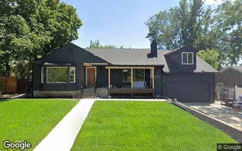
$713,079 gross · bought $957,600 (Mar 2024) → sold $1.7M
3020 E MIDDLETON WAY, Salt Lake City UT 84124
Single family · 3,201 sqft · May 11
Street View Jul 2025 — during the flip
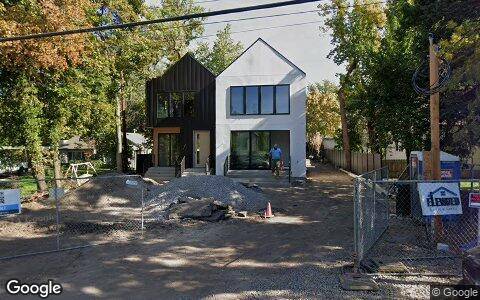
$459,057 gross · bought $1.8M (Oct 2023) → sold $2.3M
4801 S BONAIR ST, Salt Lake City UT 84117
Single family · 4,887 sqft · May 7
Street View Oct 2024 — during the flip
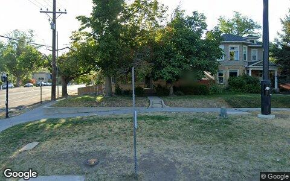
$345,800 gross · bought $731,500 (Dec 2025) → sold $1.1M
801 S 900 E, Salt Lake City UT 84102
Single family · 1,678 sqft · May 15
Street View Aug 2025 — before the flip (pre-renovation)
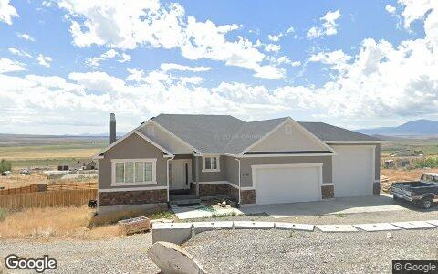
$343,080 gross · bought $510,000 (Jan 2026) → sold $853,080
1981 W RIDGELINE RD, Stockton UT 84071
Single family · 1,553 sqft · May 15
Street View Aug 2024 — before the flip (pre-renovation)
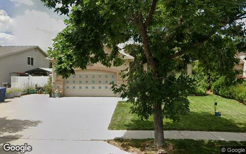
$319,865 gross · bought $332,500 (Jan 2026) → sold $652,365
5754 S CREST FLOWER WAY, Salt Lake City UT 84118
Single family · 1,446 sqft · May 28
Street View Jul 2025 — before the flip (pre-renovation)
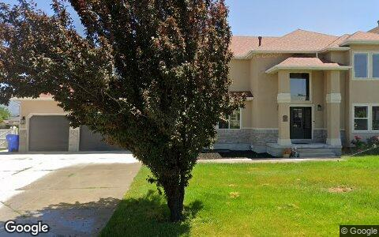
$315,476 gross · bought $997,500 (May 2024) → sold $1.3M
11711 S STONE CREST CIR, Riverton UT 84065
Single family · 3,553 sqft · May 1
Street View Jun 2025 — during the flip
Flip Structure — Year over Year
How the flip market itself is changing: margins, who is doing the flipping, what they flip, and where. Same two calendar months, this year vs last, from the current data extract.
| Flip market structure | Same months last year | This edition |
|---|
| Flips sold | 81 | 33 |
| Median sale | $556,346 | $550,396 |
| Median $/sqft | $320 | $369 |
| Sale vs county-assessed | 1.28× | 1.32× |
| Median gross margin (matched buys) | $125,968 | $134,058 |
| Median margin % | 28% | 29% |
| Median hold | 6.4 mo | 6.7 mo |
| Homes bought by flippers | 74 | 35 |
| Net to inventory (bought − sold) | −7 | +2 |
| Active flippers | 68 | 29 |
| Top-10 flippers' revenue share | 31% | 59% |
| Median house: sqft / beds / built | 1885 / 3 / 1978 | 1638 / 4 / 1973 |
| Pre-1950 stock share | 9% | 27% |
| 2–4 unit share | 0% | 0% |
| Median distance from downtown | 17.0 km | 20.4 km |
Dollar figures on this page are estimates. This county does not disclose sale prices, so 58% of them are back-computed from the recorded mortgage at an assumed loan-to-value. Treat every price, margin and per-foot figure as indicative. Counts, dates, hold times, parties and geography come from the deed record itself and are unaffected.
Homes bought counts every deed recorded to a known flipper in the window, resold or not. Net to inventory is that minus flips sold. The standing stock is in the Flip Pipeline section.
Attributed profit per flip (per-investor aggregates, by drop period): Feb 26→Jun 26: 272 flips, n/a (revisions) · Jun 26→Aug 26: 32 flips, $119,110/flip.
County mix (share of flips, last year → this edition): Salt Lake 85%→73% · Tooele 15%→27%.
Biggest zip share moves: Tooele 7.4%→24.2% · Riverton 1.2%→9.1% · Grantsville 7.4%→0.0% · 84129 6.2%→0.0% · East Central 0.0%→6.1% · Daybreak 4.9%→0.0%.
Flip Pipeline — Buying, Selling and Inventory
Homes bought by known flippers and homes they resold, per month, alongside the stock sitting in flipper hands. A house enters inventory when a flipper buys it and leaves on the next recorded sale, at any price. Purchases still unsold after five years are treated as holds and drop out.
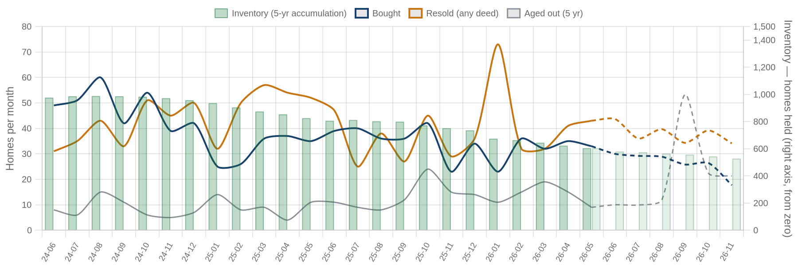
Solid = recorded, dashed = projected. Green bars are inventory on the right axis: homes bought and not yet resold. Aged out is purchases passing five years unsold. Inventory moves by bought minus resold minus aged out.
| Flip pipeline | Bought / mo | Resold / mo | Aged out / mo | Inventory |
|---|
| Latest recorded month (2026-05) | 33 | 43 | 9 | 604 |
| Projected (2026-11) | 18 | 34 | 21 | 527 |
Method: a straight-line trend through the last 24 months, adjusted for the month of the year, shown dashed as a projection. The series stops before the newest month or two, where deeds are still recording.
Who's Funding the Deals
First mortgages open on flipper purchases from Jul 2025 – Jun 2026 that have not yet resold. 22% carried recorded debt; the rest closed cash or off-record. Ranked by deal count.
22%
Purchases financed
48 of 217 flipper purchases carried a recorded first mortgage
$374,847
Typical loan
recorded lien amount; this county does not disclose sale prices, so loan-to-price cannot be computed here
| Lender | Loans | Borrowers | Median loan | Median purchase |
|---|
| United Wholesale Mortgage LLC | 4 | 4 | $508,870 | $474,108 |
Dollar figures on this page are estimates. This county does not disclose sale prices, so 58% of them are back-computed from the recorded mortgage at an assumed loan-to-value. Treat every price, margin and per-foot figure as indicative. Counts, dates, hold times, parties and geography come from the deed record itself and are unaffected.
Rates and terms are not published: the county feed models both. Borrowers counts the distinct flippers on each lender's book. Loan vs price is the recorded first mortgage divided by what the buyer paid. Above 1.00x the lender is funding purchase plus rehab; below it the buyer brought cash to the table. Blanket mortgages covering several parcels are excluded, as are loans outside 0.1x-3x the price. Rates and points are not public record.
Flipper Profile — The Working Flipper
The 70th–90th percentile of local flippers by lifetime flip count — the established operators below the whales: 3–7 lifetime flips each. Bath counts are not in the assessor extract.
348
Flippers in the band
each with 3–7 lifetime flips (avg 3.9)
$79,400
Median gross margin
385 flips matched to their purchase price
5.8 mo
Typical hold
purchase to resale, matched deals
1714 sqft · 4 bd
Typical house
median year built 1971
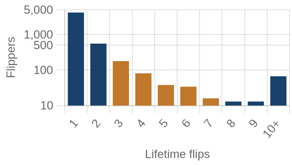
flippers by lifetime flips · orange = this band
Where they work: Tooele (84074) 8% · West Valley West (84120) 7% · Rose Park (84116) 6% · Kearns (84118) 5% · Riverton (84065) 4%.
Market Pulse
| per month, Feb–Jun 2026 | per month, Jun–Aug 2026 | change | avg/mo 2yr | avg/mo 4yr |
|---|
| ▼ Homes bought by flippers | 37 | 18 | -53% | 38 | 39 |
| ▼ Flips sold (deeds) | 41 | 17 | -59% | 42 | 40 |
| ▲ Lending deals funded | 31 | 139 | +356% | — | — |
| ▼ Seller/notes held (net) | 16 | 12 | -27% | — | — |
| ▼ Investors (net) | -301 | -6,154 | −5,853/mo | — | — |
Flips and flipper purchases = recorded deeds, same two months each year; their 2- and 4-year columns are per-month averages of the deed series. The remaining rows come from the investor file, which spans 13 months, so they have no multi-year average (2026: Jun 2026 → Aug 2026; 2025: Feb 2026 → Jun 2026).
Past Issues
Methodology
Source Data
County recorder & assessor via FARES
Every figure is computed from recorded instruments (deeds, mortgages, assignments) and assessor property records for the five counties of the Salt Lake City-Elyria MSA. No surveys, no estimates, no listings data.
This edition analyzes transactions dated May 1 – June 30, 2026, as recorded through the 2026-08 data extract.
Who Counts as an Investor
Transaction-pattern identification
Investors are entities whose recorded transaction history looks like investing: rental holding (landlords), short-hold resales (flippers), private mortgage lending, note holding, or contract assignment (wholesalers). Banks, homebuilders, iBuyers, SFR funds, and government entities are identified by name and reported separately from small investors.
How Comparisons Work
Attribution deltas + same-window comparisons
The Market Pulse reports activity attributed between successive data drops, from the per-investor lifetime totals maintained upstream — periods differ in length, so per-month rates are shown. Elsewhere, "vs. year ago" compares the same calendar months one year earlier, counted from the same data extract. Transfers under $5,000 (quitclaims, partial interests) are excluded everywhere. Counts lag recording by 4–8 weeks, and the newest month can grow up to ~15% as late records arrive — direction is reliable before magnitude.
Known Limits
Floors, not ceilings
Wholesale assignments only appear when they touch a recorded deed, so those counts are a floor. Flip hold times are measured from the prior recorded sale. Names are the owner of record, which may be an LLC or trust.
About
Purpose
A working tool for small real estate investors in Greater Salt Lake City: what actually closed, where, at what prices, and what it suggests checking next — one theme per issue.
Cadence
Published with each bi-monthly data drop, covering the two most recent complete months of recorded activity.
Disclaimer
Observations from public records, not investment, legal, or tax advice. Past activity does not guarantee future results. Verify any property or counterparty independently before transacting.